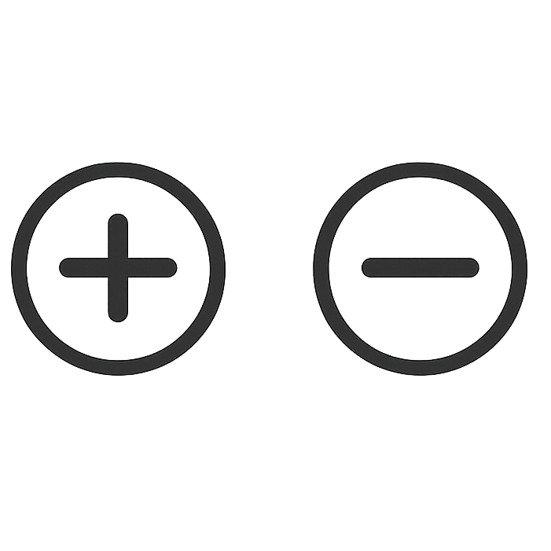

Draw Tools


✦

Edit Tools


Canvas
🎨


⎌
G

Choose export format:
Select capture frequency:
Choose type:


blobSketch version 1.5
by Colin Reid
Adjust inter-blob repulsion strength:
Adjust the force curve along the gradient path. Left = start, Right = end.